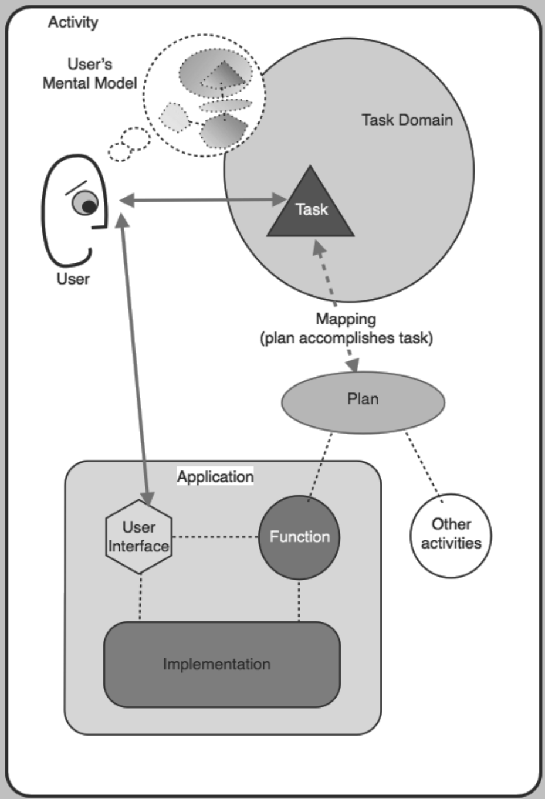
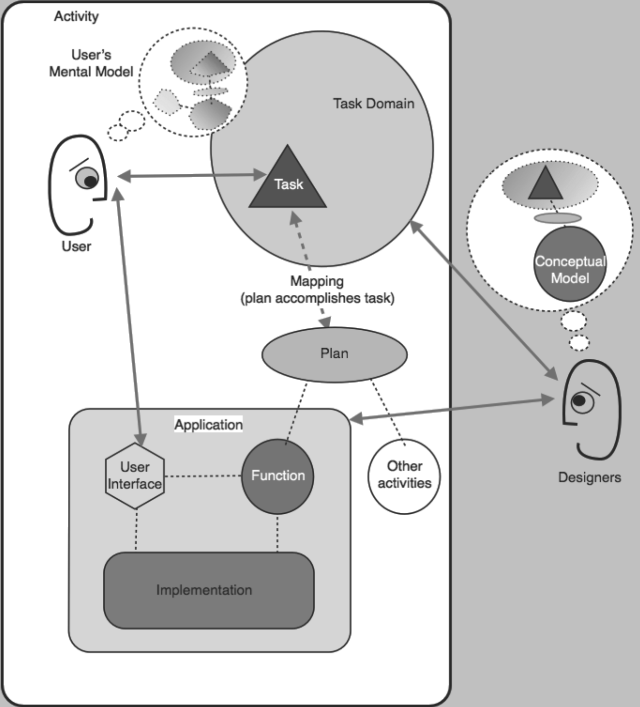
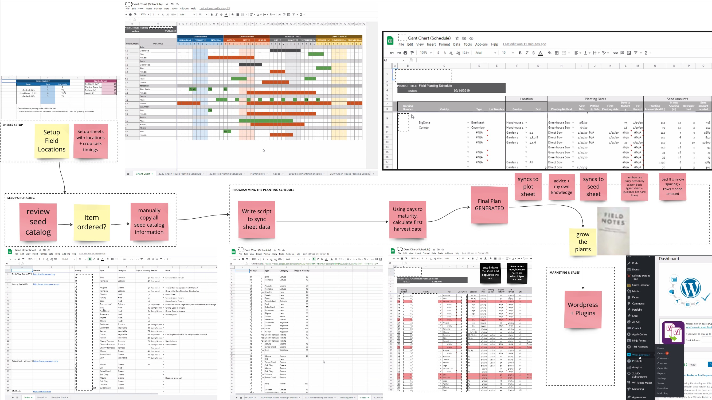
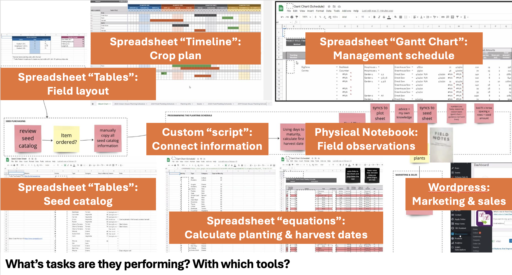
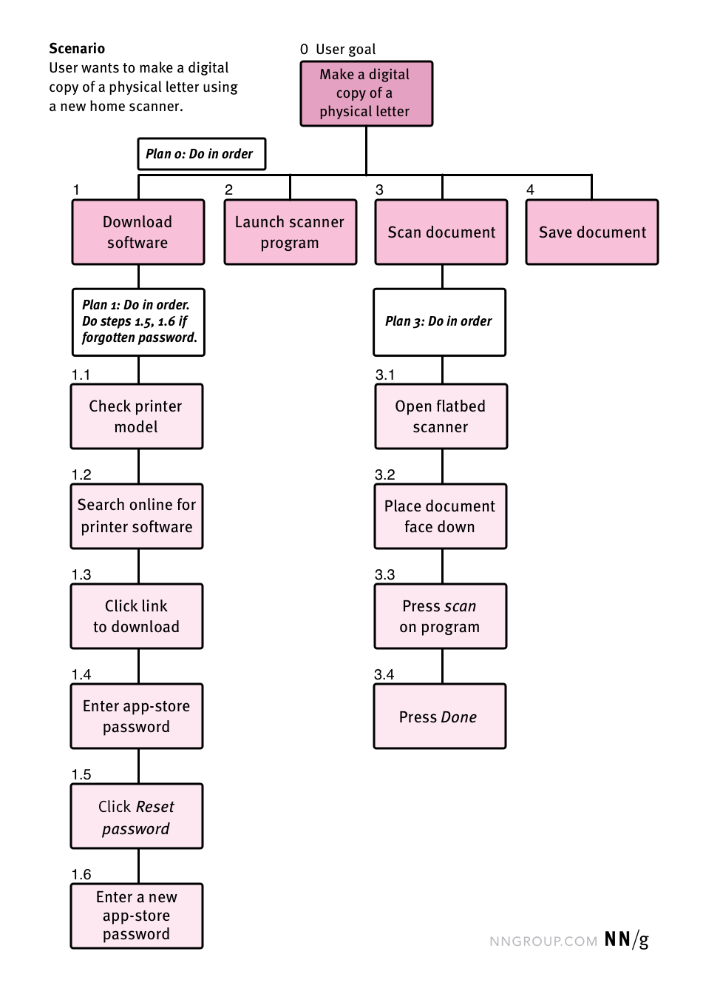
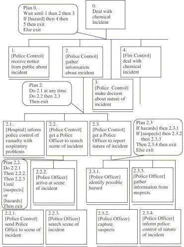
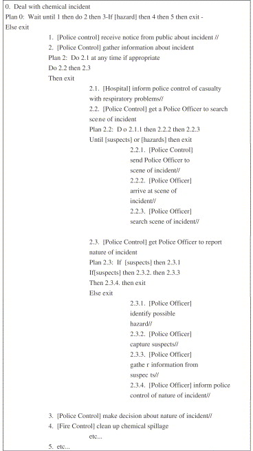
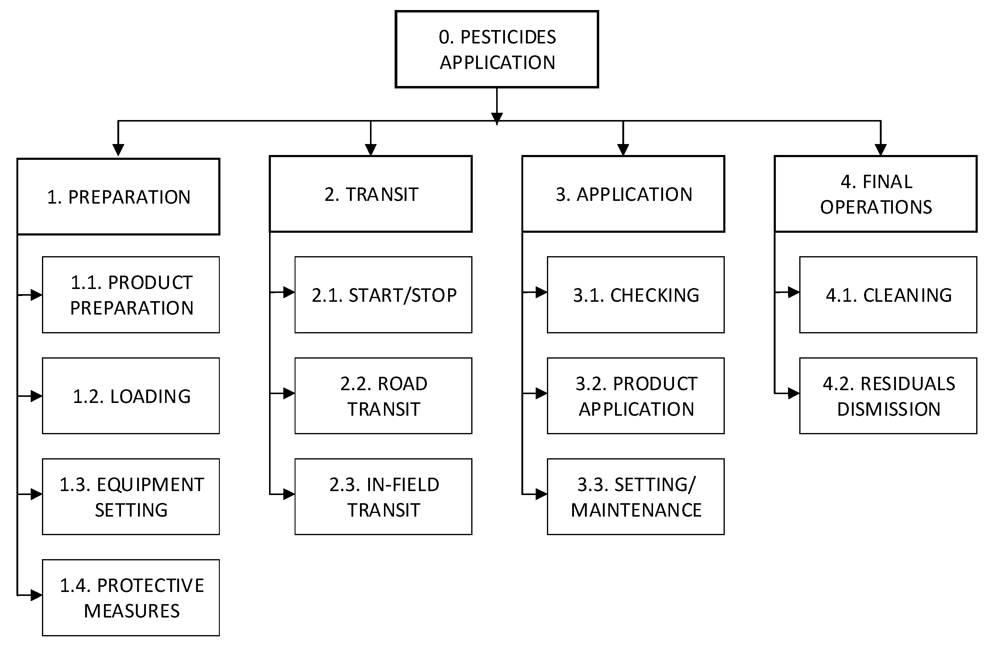
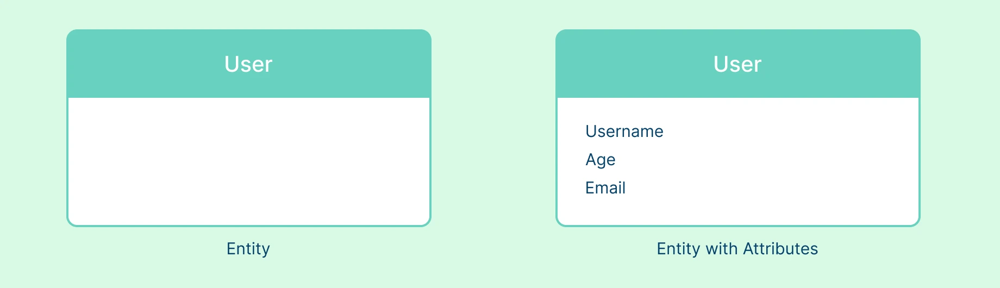

From concepts to objects
Module 3 - Concept Modeling
Lecture 3.2
ASM 532, Introduction to Ag Informatics
Ankita Raturi, ankita@purdue.edu
Lecture Outline
- Concept -> object model
- Decomposing a domain
- Design methods: hierarchical task analysis; object and operational analysis
- Next Lecture: object -> data model
- Software development tools: UML diagramming tool
- Languages: SQL, Python
- Activity: model your own system (5 pts) - Lab 3, Part 1
Goal: decompose a domain you know into tasks, and turn those tasks into an object model you can draw.
Work, activities, tasks
- Work is what someone is trying to get done.
- Work is made of activities - growing a crop, managing a herd, running a trial.
- Activities are made of tasks - decide when to irrigate, record a treatment, compare two fields.
Software does not support "farming." It supports tasks.
Task domains
"All the tasks associated with an activity, considered together, are referred to as a task domain."
- Example task domains:
- Irrigation scheduling.
- Pest scouting.
- Water sample analysis.
- Habitat assessment
- Naming the task domain sets the boundary of design.
On paper:
Name 1-3 task domains that you are considering for your lab.
Jeff Johnson and Austin Henderson, "Conceptual Models: Core to Good Design", Morgan & Claypool, 2011.
Task-Tool Mapping
- If: a tool is "a technology that people use to help them carry out tasks in a task domain"
- Then: tools are used if they "help with a user's task, [...]because it adds value to their activity"
- Services provided by a tool are functions:
"what the application does and the user employs in getting their work done" - "the [user] has to make a connection between tasks and tools, a plan for using the functions of the tools to accomplish the task".
Jeff Johnson and Austin Henderson, "Conceptual Models: Core to Good Design", Morgan & Claypool, 2011.
Users have mental models
When a tool is hard to use: functions may exist, but mapping is missing.

Jeff Johnson and Austin Henderson, "Conceptual Models: Core to Good Design", Morgan & Claypool, 2011.
One task, many tools
"Tasks can be accomplished with different tools."
Deciding when to irrigate can be done with:
- a soil probe and judgement
- a spreadsheet of moisture readings
- a scheduling app with a weather feed
- a neighbor's advice
So at some point a person has
to
find out tools are
available,
and learn how
each can be useful for
the tasks
that the person wants to carry out as part of their activities"
Designers have conceptual models
Conceptual modeling is to understand users' task-tool mapping.

Jeff Johnson and Austin Henderson, "Conceptual Models: Core to Good Design", Morgan & Claypool, 2011.
Designing conceptual models
"Designers should design new technology to support how people want to think about doing their tasks."
- A conceptual model is:
- Partial on purpose: abstract unnecessary attributes.
- Simple, not overtly complicated
- Designed iteratively. An ideal with gut-checks.
- Reflective of users' ideal mental model:
- not how the database demands it
- not just how the last tool happened to do it
- not the fanciest most complex mathematical formalization
"Good enough to work with" is the target, not "complete."
Map the task domain?


L3, Step 1: Map the domain [10 mins]
Pick ONE of your task domains that you are considering for lab.
- Draw the system.
- Show what physically moves through it: seed from planting to harvest, a sample from field to lab, an order from request to delivery.
- Show what information moves alongside it: where is data created, who records it, where does it go next, and where it is used, saved, or lost?
This is a brainstorming sketch, not a deliverable :)
Hierarchical task analysis

Task Analysis, Nielsen Norman Group.
Worked example: chemical incident response
Same analysis, drawn two ways. The plans are the rounded boxes - they say in what order, and under what condition.


Annett & Stanton, hierarchical task analysis examples, Applied Ergonomics.
Worked example: applying a pesticide

Adapted from Agriculture 9(7):158, MDPI, 2019.
L3, Step 2: Task Analysis [10 mins]
Design for how people plan: for how they map tasks to tools.
- Write the users' goal at the top. Number it 0.
- Break it into tasks (1, 2, 3...).
A task is something the user is trying to get done, not a feature of a tool. - Break each task into sub-tasks (1.1, 1.2...).
Stop when a sub-task is small enough that you could describe in one sentence. - Add a plan at each level, describing the flow of child-tasks.
The plans include loops, waiting, and branching.
L3, Step 3: Identify concepts [2 mins]
- Review your task hierarchy and highlight the nouns in each task.
Note: A noun that appears in only one sub-task is usually a detail of another concept, not a concept of its own. - These are your candidate concepts.
- From the pesticide application example:
product, equipment, field, application, operator. - Aim for more than you need — you will cut in the next step. Highlight or mark which concepts you think are important to modeling your task-domain.
Object and operational analysis
Take each concept you kept, and decompose it:
- Objects - the nouns themselves.
- Attributes - what you know about each one, and what type that is.
- Operations - what the tasks do to it: create, record, assign, close.
The operations come straight off your task hierarchy. That is what the hierarchy was for.
Method from Johnson & Henderson, "Conceptual Models: Core to Good Design", ch. 4.
Then relate them
For each pair that connects, pick which applies and label the line:
- is a type of - hierarchy
- is a part of - containment or aggregation
- produces / consumes - source and sink
- is associated with - anything else, but name it
An unlabelled arrow is not a relationship.
Don't make yourself
guess later!
Decompose + relate: irrigation scheduler
Task domain: keeping a crop watered without wasting water or pumping capacity.
| Object | Attributes | Operations | Related to |
|---|---|---|---|
| Zone | name, area, crop, soil type | add, retire | - |
| Moisture Reading | depth, value, taken-at | record | is a part of Zone |
| Irrigation Set | start, duration, depth applied | schedule, confirm | is a part of Zone |
| Water Budget | period, allocation, used-so-far | set, draw down | consumed by Irrigation Set |
These are the nouns a user already says out loud.
How to draw it
A box per object, its name at the top, its attributes listed underneath, and a labelled line to each object it relates to.

Four objects, maximum. Pen and paper is fine - this one is not a diagramming-tool exercise yet.
Crow's Foot Notation guide, Creately.
L3, Step 4: Outline then sketch a box-and-arrow object model [15 mins]
Task domain: ____________ .
| Object | Attributes | Operations | Related to |
|---|---|---|---|
| Zone | name, area, crop, soil type | add, retire | - |
| E.g., Moisture Reading | depth, value, taken-at | record | is a part of Zone |
| ... | ... | ... | |
| ... | ... | ... | |
| ... | ... | ... |
Convert to box-and-arrow diagram.
Activity: model your own system
Pick a task domain you actually know. Pen and paper. 5 pts for complete, not for right.
- 1 Map the domain - what moves through it, and what information moves alongside.
- 2 Task analysis - goal, tasks, sub-tasks, plans.
- 3 Highlight the nouns. List your candidate concepts.
- 4 Box-and-arrow object model. Four objects maximum, every line labelled.
This is Lab 3, STEPs 1-4: lab-3-data-model/README.md. Photograph your sketches before you leave.
Next steps:
- Finish STEPs 1-4 on your own, and write up what you noticed.
- Lecture 3.3: turning that object model into tables, keys, and Python.
- Check Brightspace for due dates.
Questions?
License
-

Introduction to Agricultural Informatics Course by Ankita Raturi, Purdue University is licensed under a Creative Commons Attribution-NonCommercial-ShareAlike 4.0 International License.
- You are free to:
- Share — copy and redistribute the material in any medium or format
- Adapt — remix, transform, and build upon the material
- Under the following terms:
- Attribution — You must give appropriate credit, provide a link to the license, and indicate if changes were made. You may do so in any reasonable manner, but not in any way that suggests the licensor endorses you or your use.
- NonCommercial — You may not use the material for commercial purposes.
- ShareAlike — If you remix, transform, or build upon the material, you must distribute your contributions under the same license as the original.
- No additional restrictions — You may not apply legal terms or technological measures that legally restrict others from doing anything the license permits.